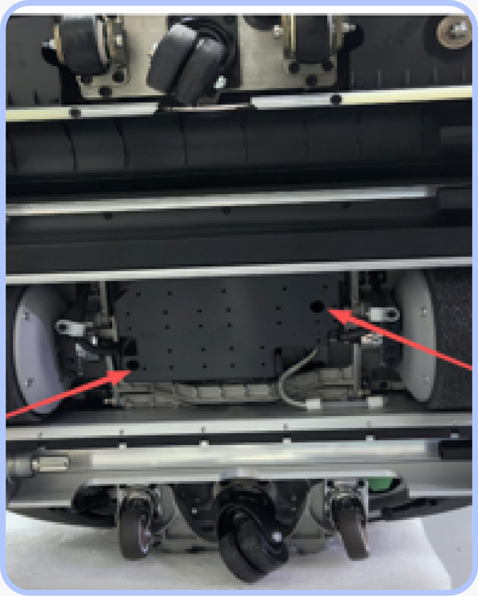

Manutenções e Tutoriais
Este documento tem como objetivo auxiliar na manutenção dos robôs e trazer o passo a passo de alguns procedimentos.
Sumário
Linha DinerBot (T8, T9, T10, T11)¶
Como trocar a UI Board¶
Linha CleanBot (C40 e C30)¶
Como trocar a IPC¶
Como trocar a valvula solenoide e instalar filtro¶
-
Drene a água do tanque retirando a peça verde na parte inferior traseira do robô
-
Deite-o de modo em que possa acessar a parte de baixo
-
Remova a tampa de água fixa por 2 parafusos M4:

- Instale um filtro de água no canal mostrado na figura. Cortando o cano, adicione o filtro e isole novamente.

-
Troque a válvula solenoide por uma nova
-
Feche a tampa protetora
-
Encha o tanque do robô com água novamente e deixe-o parado por um tempo para observar se existe algum vazamento
Modelo S100¶
Como trocar a chassis control board¶
Geral¶
Como duplicar um mapa¶
Parte 1 — Baixar o mapa do robô original¶
-
Dentro da plataforma da Keenon, acesse "Operation and Maintenance Platform" → "Remote Operation and Maintenance" → "Remote Deployment"
-
Clique em "+Create"
-
Selecione o robô que já possui o mapa
-
Após conectar, acesse Map Management
-
Vá em: Settings → Advanced Settings → Download Map
-
Aguarde o download → Será gerado um arquivo .zip com o mapa
Parte 2 — Preparar o robô que vai receber o mapa¶
(Se for o mesmo robô, pode pular essa parte)
-
Vincule o robô à loja (se ainda não estiver)
-
No Robot Installation Assistant:
- Acesse Settings → Advanced Settings
- Clique em Restore to Factory Default
-
Após reiniciar, siga os passos na tela para realizar o setup inicial
-
⚠️ Importante:
-
No app principal: Acesse o menu Super Admin
-
Configure o Data Center = Other Region
-
(Dica: reconfigure também os outros parâmetros dentro deste menu)
Parte 3 — Criar um mapa temporário¶
-
Crie um novo mapa simples no robô (não precisa ser detalhado — ele será sobrescrito)
-
Finalize o processo clicando em Complete Mapping (verifique na plataforma da Keenon se este novo mapa foi enviado corretamente. Caso não tenha sido, verifique o Data Center e o W-Fi e tente novamente)
Parte 4 — Importar o mapa baixado¶
-
Dentro da plataforma da Keenon, acesse novamente "Operation and Maintenance Platform" → "Remote Operation and Maintenance" → "Remote Deployment"
-
Clique em "+Create"
-
Selecione o robô que vai receber o mapa
-
Após conectar, acesse Map Management
-
Vá em: Settings → Advanced Settings → Import from Local
-
Selecione o arquivo .zip baixado anteriormente
-
Clique em Map Upload e aguarde
Parte 5 — Ajustes finais¶
O mapa será importado com os pontos e restrições, mas não inclui:
-
Configurações gerais do app
-
Organização das abas
-
Rotas de louça personalizadas
-
Áudio em Português (BR)
Portanto, ajuste de acordo com o que foi configurado no outro robô e não se esqueça de setar também as confugurações do menu Super Admin, se já não foram setadas.